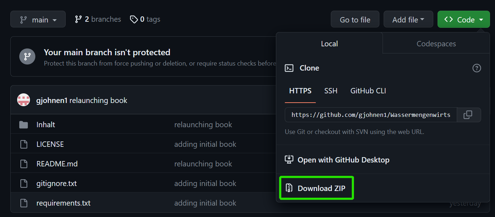
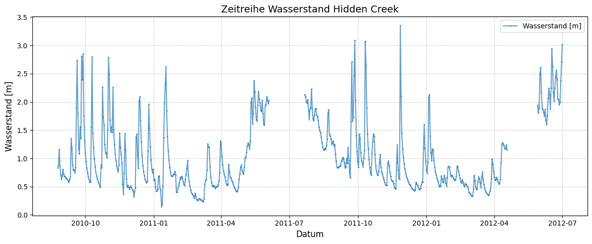
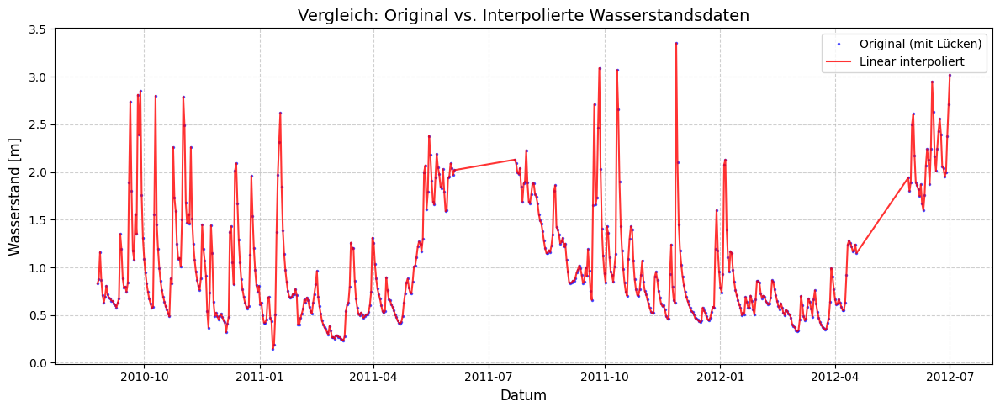

Environment Setup#
This notebook requires specific Python packages. Please follow the instructions below based on your environment:
Local Environment:
If running locally, please follow the setup instructions in the README.md file of this repository to create a Conda environment and install the required packages from requirements.txt.
Binder: If running in Binder, the environment is automatically set up based on the repository’s configuration files. No manual installation is needed.
Google Colab:
If running in Google Colab, execute the following cell to install the necessary packages. Important: After the installation completes, you must restart the Colab runtime by clicking Runtime > Restart runtime in the menu bar.
# Execute this cell only if running in Google Colab
import sys
if 'google.colab' in sys.modules:
print("Installing packages for Colab...")
%pip install pandas numpy matplotlib
print("Installation complete. Please restart the runtime (Runtime > Restart runtime).")
Ausführen von Code in Jupyter Notebooks#
In Jupyter Notebooks kann Code interaktiv ausgeführt werden. Dies ermöglicht es, den Code schrittweise auszuführen und die Ergebnisse zu überprüfen.
Um Code in einer Zelle auszuführen, gibt es verschiedene Möglichkeiten:
Klicken auf den “Run”-Button: In der Symbolleiste oben im Notebook befindet sich ein Button mit einem Pfeilsymbol. Durch Klicken auf diesen Button wird der Code in der aktuellen Zelle ausgeführt. Alternativ kann auch die Tastenkombination “Shift + Enter” verwendet werden, um den Code auszuführen und zur nächsten Zelle zu gelangen.
Verwendung der Tastenkombination “Ctrl + Enter”: Falls nur der Code in der aktuellen Zelle ausgeführt werden soll, ohne zur nächsten Zelle zu wechseln, kann die Tastenkombination “Ctrl + Enter” verwendet werden. Dadurch wird der Code ausgeführt, und der Cursor verbleibt in derselben Zelle.
Verwendung der Tastenkombination “Shift + Enter”: Falls der Code in der aktuellen Zelle ausgeführt werden soll und direkt zur nächsten Zelle zu gewechselt werden soll, kann die Tastenkombination “Shift + Enter” verwendet werden. Dadurch wird der Code ausgeführt, und zur nächsten Zelle gesprungen.
Es ist wichtig zu beachten, dass der Code in den Zellen in der Reihenfolge ausgeführt wird, in der sie ausgeführt werden. Wenn also Code in einer bestimmten Zelle geändert und erneut ausgeführt wird, werden die Ergebnisse entsprechend aktualisiert.
Das Ausführen von Code in Jupyter Notebooks ermöglicht eine iterative Entwicklung und erleichtert das Experimentieren und die Datenanalyse. Probiert es hier aus, indem Ihr den Code in den Codezellen dieses Notebooks ausführt!
Grundlegende Python-Konzepte#
Python bietet eine Vielzahl von eingebauten Funktionen und Konzepten, die das Programmieren erleichtern. Hier sind einige der wichtigsten Grundlagen:
Variablen und Datentypen#
Variablen dienen dazu, Werte zu speichern. Jeder Wert in Python hat einen bestimmten Datentyp, der bestimmt, welche Art von Daten gespeichert ist und welche Operationen damit durchgeführt werden können. Die wichtigsten einfachen Datentypen sind:
int: Ganze Zahlen (z.B.10,-5,0)float: Gleitkommazahlen (Dezimalzahlen, z.B.3.14,-0.5,1.0)str: Zeichenketten (Text, in Anführungszeichen eingeschlossen, z.B.'Hallo',"Python")bool: Wahrheitswerte (TrueoderFalse)
Mit der Funktion type() können wir den Datentyp einer Variablen überprüfen.
# Eine Variable 'a' mit einem Float-Wert
a = 1.1
print(a)
type(a)
1.1
float
# Eine Variable 'b' mit einem String-Wert
b = "1.1"
print(b)
type(b)
1.1
str
# Eine Variable 'c' mit einem Integer-Wert
c = 1
print(c)
type(c)
1
int
# Eine Variable 'd' mit einem Boolean-Wert
d = True
print(d)
type(d)
True
bool
Umwandlung von Datentypen (Type Casting)#
Manchmal müssen wir den Datentyp einer Variablen ändern. Zum Beispiel, wenn wir eine Zahl, die als Text gespeichert ist (String), in eine tatsächliche Zahl (Integer oder Float) umwandeln wollen, um damit rechnen zu können. Dies nennt man Type Casting.
int(): Wandelt in eine ganze Zahl um.float(): Wandelt in eine Gleitkommazahl um.str(): Wandelt in eine Zeichenkette um.
a = int(1.1)
print(a)
1
type(a)
int
float(a)
1.0
str(a)
'1'
Funktionen#
Funktionen sind wiederverwendbare Codeblöcke, die eine bestimmte Aufgabe erfüllen. Sie helfen, Code zu organisieren und Wiederholungen zu vermeiden. Man definiert eine Funktion mit def und kann ihr Argumente (Parameter) übergeben.
def square():
'''
Diese Funktion berechnet das Quadrat von 2.
'''
return 2 * 2
square()
4
def square(x):
'''
Diese Funktion berechnet das Quadrat einer gegebenen Zahl x.
Parameter:
x (int oder float): Die Zahl, deren Quadrat berechnet werden soll.
Rückgabewert:
int oder float: Das Quadrat von x.
'''
return x ** 2
square16 = square(16)
square16
256
str(square16)
'256'
square(x=3)
9
def quadrat(zahl):
return zahl ** 2
quadrat(zahl=3)
9
Kontrollstrukturen: If-Anweisungen#
Mit If-Anweisungen können wir Code nur dann ausführen, wenn eine bestimmte Bedingung erfüllt (True) ist. Mit else können wir einen alternativen Codeblock definieren, der ausgeführt wird, wenn die Bedingung nicht erfüllt (False) ist.
zahl = -15
if zahl > 0:
print("Die Zahl ist positiv.")
else:
print("Die Zahl ist nicht positiv.")
Die Zahl ist nicht positiv.
Beispiel: Datenimport, Datenqualitätsprüfung und Workflow#
Einführung#
Die Überprüfung der Datenqualität ist ein unvermeidlicher und entscheidender Schritt in jeder Analyse. Häufig werden Daten verwendet, die extern erhoben wurden, oder aus vielen verschiedenen Quellen stammen. In diesem Kurs arbeiten wir mit Wasserstands- und Durchflussdaten, die vom Water Survey of Canada (WSC) und anderen Quellen gesammelt wurden. In der Berufspraxis liegt die Verantwortung der Datenqualitätsprüfung allein bei dem/der Ingenieur:in. Die Daten sind oft wichtige Grundlage für Entwurfsplanung oder die Entscheidungsfindung. Datensätze aus offenen Quellen werden oft von einem Haftungsausschluss begleitet, siehe WSC-Haftungsausschluss zum Beispiel.
Da die Größe der Datensätze fast überall kontinuierlich wächst, wird es immer wichtiger, automatisierte Ansätze zur Datenüberprüfung zu verwenden. Dieses Notebook bietet eine (wenn auch sehr kurze) Einführung in das programmgesteuerte Importieren und Überprüfen von Datensätzen. Es wird eine eine beispielhafte „CSV“-Datei von einem Messgerät importiert, das häufig in der hydrologischen Praxis verwendet wird. Die Größe des Datensatzes, den man manuell auf Anomalien überprüfen kann, ist allerdings begrenzt.
Beim Lernen der Programmiersprache Python gibt es ein paar triviale Aufgaben, die eventuell unnötig komplex erscheinen. Das Importieren von Daten ist ein solches Beispiel. Während man sonst auf eine einzelne Excel Datei klickt, um sie zu öffnen, und meistens das Programm bereits weiß, ob eine Zelle beispielsweise eine Zahl oder einen Text enthält, muss man in Python oft explizit den Datentyp deklarieren oder überprüfen, mit dem gearbeitet wird. Das folgende Beispiel zeigt ein häufiges Datenimportproblem und wie man damit umgeht.
Hinweis: Das unten häufig verwendete „#“-Symbol wird zum Hinzufügen von Kommentaren verwendet. Diese dienen dazu Informationen an andere Personen zu übermitteln, die den Code überprüfen oder verwenden sollen. Der Python-Interpreter ignoriert alle Zeilen, die mit „#“ beginnen.
Was hat das mit Hydrologie zu tun?#
Die in das Erlernen der Grundlagen der Tools investierte Zeit erspart später eventuell viele Stunden Frustration. Diese Stunden können so in die Erforschung und Prüfung hydrologischer Konzepte anhand von Beobachtungsdaten investiert werden. Grundsätzlich gilt: Eine Automatisierung der Dateiverwaltung und Datenprüfung ermöglicht das Erstellen leistungsstarker und reproduzierbarer Analysen.
Benötigte Bibliotheken#
Für die Datenanalyse in Python verwenden wir oft externe Bibliotheken. Das sind Sammlungen von vordefiniertem Code (Funktionen, Klassen), die uns helfen, spezifische Aufgaben zu lösen, ohne das Rad neu erfinden zu müssen.
Die wichtigsten Bibliotheken für uns sind:
Pandas: Für das Einlesen, Manipulieren und Analysieren von tabellarischen Daten (wie CSV-Dateien oder Excel-Tabellen). Wir importieren es üblicherweise als
pd.Numpy: Für numerische Berechnungen, insbesondere mit Arrays (Listen von Zahlen). Wird oft als
npimportiert.Matplotlib: Zum Erstellen von Diagrammen und Visualisierungen. Wir importieren oft das
pyplot-Modul daraus alsplt.OS: Eine Standardbibliothek von Python, um mit dem Betriebssystem zu interagieren, z.B. um Dateipfade zu verwalten.
# Bibliotheken importieren
# pandas ist eine Bibliothek, die "DataFrames", tabellenartige Strukturen, manipuliert,
# um effizient Operationen auf großen Datensätzen auszuführen
import pandas as pd
# numpy ist eine grundlegende Bibliothek für wissenschaftliches Rechnen
# basiert auf der Darstellung von Daten als Arrays (oft unter der Haube von Pandas verwendet)
import numpy as np
# matplotlib ist eine Bibliothek zum Plotten
from matplotlib import pyplot as plt
# os wird für die Interaktion mit dem Betriebssystem benötigt (z.B. Dateipfade)
import os
Dateipfade verstehen#
Ein grundlegendes, aber enorm wichtiges Konzept besteht darin, zu verstehen, wie man eine Datei einliest, die irgendwo im Dateisystem des Computers gespeichert ist. WICHTIG: Häufig ist dies auch auf einem anderen Computer, beispielsweise einem in einem Netzwerk oder einem offenen Datenrepository.
In modernen Betriebssystemen wie Windows und macOS wird meist einfach auf eine Datei geklickt und das entsprechende Programm startet und öffnet die Datei inklusive der Benutzeroberfläche. In Programmiersprachen geht es in die entgegengesetzte Richtung – Es muss explizit angegeben werden, wo sich eine Datei auf der Festplatte befindet. Es ist wichtig zu verstehen, dass Jupyter-Notebooks Dateipfade relativ zum Speicherort der Notebook-Datei interpretieren, wenn kein vollständiger (absoluter) Pfad angegeben wird.
Die Notebook-Datei, die in dieser Demonstration verwendet wird, trägt die Bezeichnung “Einfuehrung_Datenimport.ipynb” und ist unter “
Laden Sie die Projektdatendatei herunter#
Es wird zunächst das Code-Repository von GitHub heruntergeladen. Dies kann über den folgenden Link geschehen: gjohnen1/Wassermengenwirtschaft_und_Klimawandel
Über die grüne Schaltfläche „Code“ kann die ZIP-Datei des Code-Repositorys heruntergeladen werden, wie unten gezeigt:

Auf den meisten Systemen wird die Datei standardmäßig im Ordner „Downloads/“ abgelegt. Die Datei kann nach dem entpacken an einen beliebigen Ort verschoben werden (Sciebo ist auch möglich). Dieser Ordner wird als Projektstammverzeichnis bezeichnet.
Dateistruktur#
Auf der Ebene des Stammverzeichnisses sieht die Struktur ungefähr wie folgt aus:
\OneDrive - Universitaet Duisburg-Essen\GitHub\repos\Wassermengenwirtschaft_und_Klimawandel
│ README.md
│ requirements.txt <--
│
└───Inhalt
│ │ config.yml
│ │ Einleitung.md
│ │ markdown.md
│ │ _toc.yml
│ │
│ └───_build
│ │ ...
│ │
│ └───img
│ │ ...
│ │
│ └───Notebook_Daten
│ │ ...
│ │
│ └───Notebooks
| │ └───Einführung <-- Dies ist der Speicherort von Einleitung_Datenimport.ipynb
│ │ └───Notebook_1
│ │ └───...
│ │
│ └───Projekt_Daten <-- Dies ist der Speicherort der Daten, die für das Projekt verwendet werden
│ │ ...
│ │
Am Ende der Dateistruktur befindet sich ein Ordner namens “Projekt_Daten”, der eine Reihe von CSV-Dateien enthält, die für die Hausarbeit verwendet werden. Es wird nun versucht die Datei “Hidden_Creek_stage_data.csv” zu öffnen.
os.getcwd()
'C:\\Users\\grego\\OneDrive - Universitaet Duisburg-Essen\\GitHub\\repos\\Wassermengenwirtschaft_und_Klimawandel\\Inhalt\\Notebooks\\Einleitung'
Eine CSV-Datei einlesen mit Pandas#
Die häufigste Art, tabellarische Daten in Python zu importieren, ist die Verwendung der Funktion pd.read_csv() aus der Pandas-Bibliothek. Diese Funktion benötigt als wichtigstes Argument den Pfad zur CSV-Datei.
Wenn eine Datendatei (nennen wir sie data.csv) im selben Ordner wie diese Notebook-Datei gespeichert ist, können wir sie einfach mit ihrem Namen einlesen:
df = pd.read_csv('data.csv')
Hinweis: Oben wird die Funktion
read_csvaus der Pandas-Bibliothek (mit der Kurzformpd) aufgerufen. Der Dateipfad ist in diesem Fall einfach'data.csv'. Beachten Sie, dass der Pfad als Zeichenfolge (String) übergeben wird, d.h. in ‘einfache Anführungszeichen’ oder “doppelte Anführungszeichen” eingeschlossen.
In den meisten Fällen sind Daten jedoch besser organisiert, z.B. in einem separaten “Daten”-Ordner, anstatt direkt neben dem Code oder Notebook. Wenn die Datei woanders gespeichert ist, müssen wir den Pfad dorthin angeben. Wir versuchen nun, die Datei Hidden_Creek_stage_data.csv einzulesen, die sich im Ordner Projekt_Daten befindet.
Wenn wir versuchen, diese Datei nur mit dem Dateinamen zu öffnen, sucht Pandas im aktuellen Arbeitsverzeichnis (dem Ordner dieses Notebooks) nach der Datei, wird sie aber nicht finden, da sie sich in einem anderen Ordner (../../Projekt_Daten/) befindet.
Die Fehlermeldung wird in etwa wie folgt lauten:
FileNotFoundError Traceback (most recent call last)
<ipython-input-5-b872b6bb0ac8> in <module>
3 # in this case is located in the
4 # Open the folder and navigate to where
----> 5 df = pd.read_csv('Hidden_Creek_stage_data.csv')
# Dieser Versuch wird fehlschlagen, da die Datei nicht im aktuellen Verzeichnis liegt.
try:
data = pd.read_csv('Hidden_Creek_stage_data.csv')
except FileNotFoundError as e:
print(f"Fehler aufgetreten (erwartet): {e}")
Fehler aufgetreten (erwartet): [Errno 2] No such file or directory: 'Hidden_Creek_stage_data.csv'
Dieser Fehler tritt auf, weil dem Interpreter mitgeteilt wurde, dass sich die Datei auf der Ebene des Projektstamms befindet, sie aber nicht dort abgespeichert ist.
Das aktuelle Arbeitsverzeichnis finden#
Um zu verstehen, von wo aus Python nach Dateien sucht, können wir das aktuelle Arbeitsverzeichnis (Current Working Directory, CWD) mit der Funktion os.getcwd() ermitteln.
# Speichern Sie den aktuellen Arbeitsverzeichnispfad als Zeichenfolge
working_directory = os.getcwd()
# zeigt den aktuellen Pfad an
print(f"Aktuelles Arbeitsverzeichnis:\n{working_directory}")
Aktuelles Arbeitsverzeichnis:
C:\Users\grego\OneDrive - Universitaet Duisburg-Essen\GitHub\repos\Wassermengenwirtschaft_und_Klimawandel\Inhalt\Notebooks\Einleitung
Hinweis: Wenn die letzte Zeile eines Codeblocks eine Variable oder das Ergebnis einer Funktion ist, gibt Jupyter Notebook das Ergebnis oft automatisch aus. Wenn man explizit etwas ausgeben möchte, insbesondere wenn es nicht die letzte Zeile ist, verwendet man die
print()-Funktion.
Wir können den Inhalt des aktuellen Arbeitsverzeichnisses mit os.listdir() auflisten, um zu sehen, welche Dateien und Ordner sich darin befinden.
os.listdir(working_directory)
['.gitignore', '.ipynb_checkpoints', 'Einfuehrung_Datenimport.ipynb', 'img']
Hier ist zu sehen, dass sich im aktuellen Arbeitsverzeichnis keine .csv-Dateien befinden. Das liegt daran, dass die Projektdaten unter \Wassermengenwirtschaft_und_Klimawandel\Inhalt\Projekt_Daten\ gespeichert werden.
Möglichkeiten zur Angabe eines Dateipfads#
Um die Datei Hidden_Creek_stage_data.csv aus dem Verzeichnis Projekt_Daten zu laden, haben wir mehrere Möglichkeiten:
Absoluter Pfad: Geben Sie den vollständigen Pfad von der Wurzel des Dateisystems an. Dies ist spezifisch für jeden Computer und jedes Betriebssystem. Beispiel (muss angepasst werden!):
'C:\Users\IhrName\Projekt\Inhalt\Projekt_Daten\Hidden_Creek_stage_data.csv'oder'/home/ihrname/Projekt/Inhalt/Projekt_Daten/Hidden_Creek_stage_data.csv'. Nachteil: Funktioniert nicht auf anderen Computern oder wenn das Projekt verschoben wird.Relativer Pfad: Geben Sie den Pfad relativ zum aktuellen Arbeitsverzeichnis (dem Ordner dieses Notebooks) an. Dies ist die bevorzugte Methode für Projekte, da sie portabler ist.
.steht für das aktuelle Verzeichnis...steht für das übergeordnete Verzeichnis (eine Ebene höher).
Da sich unser Notebook in
Inhalt/Notebooks/Einleitungbefindet und die Daten inInhalt/Projekt_Daten, müssen wir zwei Ebenen nach oben (../../) und dann in den OrdnerProjekt_Datenwechseln.
Alternativ kann vom Speicherort dieser Notebook-Datei (dem „aktuellen Arbeitsverzeichnis“) zur Datendatei navigieren. Man spricht dann von einem relativen Pfad. Die Pandas-Funktion
read_csv('<filepath>')liest (../) im Dateipfad so, dass sie vom aktuellen Verzeichnis aus „eine Ebene nach oben“ geht. Basierend auf der Dateistruktur wie oben beschrieben ist zu sehen, dass der Ordnerproject_data/zwei Ebenen höher vom aktuellen Arbeitsverzeichnis liegt.
Dies lässt sich anhand der Funktion „listdir“ gut erklären.
os.listdir('../')
['.ipynb_checkpoints', 'Einleitung', 'Hausarbeit', 'Uebung_1', 'Uebung_2']
os.listdir('../../')
['Einleitung.md',
'img',
'markdown.md',
'Notebooks',
'Notebook_Daten',
'Projekt_Daten',
'_build',
'_config.yml',
'_toc.yml']
Oben wird der Ordner Projekt_Daten/ nun gelistet. Der Inhalt des Ordners lässt sich wie folgt auflisten:
os.listdir('../../Projekt_Daten')
['Hidden_Creek_stage_data.csv',
'measured_EC_data_A.csv',
'measured_EC_data_B.csv',
'measured_EC_data_C.csv',
'measurement_calibration_A.csv',
'measurement_calibration_B.csv',
'measurement_calibration_C.csv',
'Metadata_A.txt',
'Metadata_B.txt',
'Metadata_C.txt',
'Project_QH_table_2021.csv',
'regionaler_Abfluss']
Der relative Pfad zum Datenordner ist also ../../Projekt_Daten. Wir können diesen Pfad mit dem Dateinamen kombinieren, um den vollständigen relativen Pfad zur Datei zu erhalten. Es ist gute Praxis, Pfade mithilfe von os.path.join() zu erstellen, da dies betriebssystemunabhängig funktioniert (kümmert sich um / vs. \).
# Pfad zum Ordner, der die Daten enthält (relativ zum aktuellen Verzeichnis)
data_folder_relative = '../../Projekt_Daten/'
# Dateiname
file_name = 'Hidden_Creek_stage_data.csv'
# Kombinieren von Ordnerpfad und Dateiname mit os.path.join()
HC_data_path_relative = os.path.join(data_folder_relative, file_name)
print(f"Relativer Pfad zur Datendatei:\n{HC_data_path_relative}")
# Jetzt können wir die Datei mit dem relativen Pfad einlesen
try:
df = pd.read_csv(HC_data_path_relative)
print("\nDatei erfolgreich eingelesen!")
except FileNotFoundError:
print("\nFehler: Datei nicht unter dem angegebenen Pfad gefunden. Bitte Pfad prüfen!")
Relativer Pfad zur Datendatei:
../../Projekt_Daten/Hidden_Creek_stage_data.csv
Datei erfolgreich eingelesen!
Gemäß dem Prinzip Don’t Repeat Yourself ist es zu empfehlen, Variablen zu benutzen um Pfade von Dateien und Ordnern zu speichern. Es kann so vermieden werden, dass Dinge mehrmals geschrieben oder deklariert werden (mehr Eingaben = höhere Wahrscheinlichkeit eines Tippfehlers).
Dies sollte grundsätzlich gleich zu Beginn einer Arbeitsdatei geschehen. Es sollten immer leicht verständliche Variablennamen, z. B. data_folder = <some path to data>.
Hinweis: Es empfiehlt sich, leicht verständliche Variablennamen zu verwenden. Wenn beispielsweise eine berechneten Abfluss speichern, die den durchschnittlichen jährlichen Durchfluss darstellt, ist dies gut bei
qaundavg_annual_flow_m3szu erkennen. Ersteres mag in einem Moment Sinn machen, aber ein Jahr später weder für jemand anderen noch für einen selbst. Letzteres ist viel klarer und enthält auch eine Art Kodierung der Einheiten (m3s lässt sich leicht als \(\frac{m^3}{s}\) interpretieren, oder cms = “cubic <>metres pros<>Sekunde”) – Einheiten sind wichtig!!
Erste Dateninspektion und Qualitätschecks#
Nachdem wir die Daten erfolgreich in einen Pandas DataFrame (df) geladen haben, ist der nächste wichtige Schritt, einen ersten Blick darauf zu werfen und grundlegende Qualitätschecks durchzuführen. Pandas bietet dafür sehr nützliche Funktionen:
df.head(n): Zeigt die erstennZeilen des DataFrames an (Standard ist 5). Nützlich, um die Spaltennamen und die ersten Datenpunkte zu sehen.df.tail(n): Zeigt die letztennZeilen an.df.shape: Gibt ein Tupel zurück, das die Anzahl der Zeilen und Spalten angibt(Zeilen, Spalten).df.info(): Gibt eine kompakte Zusammenfassung des DataFrames, einschließlich der Anzahl der Zeilen und Spalten, der Spaltennamen, der Anzahl der Nicht-Null-Werte pro Spalte und der Datentypen (Dtype) jeder Spalte. Sehr wichtig, um fehlende Werte und falsche Datentypen schnell zu erkennen!df.describe(): Berechnet deskriptive Statistiken (Anzahl, Mittelwert, Standardabweichung, Min/Max, Quartile) für numerische Spalten. Hilft, die Verteilung der Daten zu verstehen und Ausreißer zu identifizieren.df.dtypes: Zeigt nur die Datentypen jeder Spalte an.df.isnull().sum(): Zählt die Anzahl der fehlenden Werte (NaN- Not a Number) pro Spalte. Essenziell für die Datenqualität!
# Zeige die ersten 5 Zeilen
print("--- Erste 5 Zeilen (head) ---")
display(df.head()) # display() wird in Notebooks oft für schönere Tabellenausgabe verwendet
# Zeige die Form (Zeilen, Spalten)
print(f"\n--- Form (Zeilen, Spalten) ---")
print(df.shape)
# Zeige die Info-Zusammenfassung
print("\n--- Info ---")
df.info()
--- Erste 5 Zeilen (head) ---
| ID | PARAM | Date | year | month | day | Value | |
|---|---|---|---|---|---|---|---|
| 0 | 00XX000 | 2 | 2010/08/25 | 2010 | 8 | 25 | 0.83 |
| 1 | 00XX000 | 2 | 2010/08/26 | 2010 | 8 | 26 | 0.876 |
| 2 | 00XX000 | 2 | 2010/08/27 | 2010 | 8 | 27 | 1.16 |
| 3 | 00XX000 | 2 | 2010/08/28 | 2010 | 8 | 28 | 0.867 |
| 4 | 00XX000 | 2 | 2010/08/29 | 2010 | 8 | 29 | 0.711 |
--- Form (Zeilen, Spalten) ---
(677, 7)
--- Info ---
<class 'pandas.core.frame.DataFrame'>
RangeIndex: 677 entries, 0 to 676
Data columns (total 7 columns):
# Column Non-Null Count Dtype
--- ------ -------------- -----
0 ID 677 non-null object
1 PARAM 677 non-null int64
2 Date 677 non-null object
3 year 677 non-null int64
4 month 677 non-null int64
5 day 677 non-null int64
6 Value 677 non-null object
dtypes: int64(4), object(3)
memory usage: 37.1+ KB
Die df.info() Ausgabe ist besonders aufschlussreich:
Wir sehen die Anzahl der Einträge (Zeilen).
Wir sehen die Spaltennamen und die Anzahl der nicht fehlenden (
non-null) Werte pro Spalte.Wir sehen den Datentyp (
Dtype) jeder Spalte.
Beobachtung: Die Spalte Value hat den Datentyp object. In Pandas bedeutet object oft, dass die Spalte Zeichenketten (Strings) enthält oder eine Mischung aus verschiedenen Typen ist. Für numerische Berechnungen benötigen wir jedoch einen numerischen Typ wie float oder int.
Schauen wir uns nun die deskriptiven Statistiken an.
print("\n--- Deskriptive Statistiken (describe) ---")
display(df.describe(include='all')) # include='all' zeigt Statistiken auch für nicht-numerische Spalten
--- Deskriptive Statistiken (describe) ---
| ID | PARAM | Date | year | month | day | Value | |
|---|---|---|---|---|---|---|---|
| count | 677 | 677.0 | 677 | 677.000000 | 677.000000 | 677.000000 | 677 |
| unique | 1 | NaN | 677 | NaN | NaN | NaN | 406 |
| top | 00XX000 | NaN | 2010/08/25 | NaN | NaN | NaN | NaN |
| freq | 677 | NaN | 1 | NaN | NaN | NaN | 87 |
| mean | NaN | 2.0 | NaN | 2011.079764 | 6.446086 | 15.819793 | NaN |
| std | NaN | 0.0 | NaN | 0.674661 | 3.574085 | 8.853510 | NaN |
| min | NaN | 2.0 | NaN | 2010.000000 | 1.000000 | 1.000000 | NaN |
| 25% | NaN | 2.0 | NaN | 2011.000000 | 3.000000 | 8.000000 | NaN |
| 50% | NaN | 2.0 | NaN | 2011.000000 | 6.000000 | 16.000000 | NaN |
| 75% | NaN | 2.0 | NaN | 2012.000000 | 10.000000 | 24.000000 | NaN |
| max | NaN | 2.0 | NaN | 2012.000000 | 12.000000 | 31.000000 | NaN |
Die describe()-Ausgabe für die Spalte Value bestätigt, dass sie als object (wahrscheinlich String) behandelt wird. Wir sehen Statistiken wie unique (Anzahl einzigartiger Werte), top (häufigster Wert) und freq (Häufigkeit des häufigsten Werts), aber keine numerischen Statistiken wie mean (Mittelwert).
Dies bedeutet, dass wir keine direkten numerischen Berechnungen mit der Spalte Value durchführen können, wie z.B. den Mittelwert berechnen. Ein Versuch würde zu einem Fehler führen.
# Versuch, den Mittelwert der 'Value'-Spalte zu berechnen (wird fehlschlagen)
try:
mean_value = df['Value'].mean()
except TypeError as e:
print(f"Fehler beim Berechnen des Mittelwerts (erwartet): {e}")
print("Grund: Die Spalte 'Value' hat keinen numerischen Datentyp.")
Fehler beim Berechnen des Mittelwerts (erwartet): Could not convert string ' 0.830.876 1.160.8670.7110.6320.6960.8070.7140.6850.6740.6520.6490.6210.6080.5790.6260.676 1.35 1.190.8830.7860.7980.7430.838 1.89 2.74 1.8 1.18 1.08 1.56 1.35 2.81 2.39 2.85 1.76 1.31 1.090.949 0.830.7420.6710.6210.5740.586 1.56 2.8 1.45 1.190.9930.8550.7630.6950.6420.5920.5620.5190.4850.882 0.83 2.26 1.73 1.59 1.25 1.09 1.1 1.01 1.5 2.79 2.49 1.68 1.47 1.56 1.46 2.26 1.51 1.25 1.080.9570.8690.8030.765 0.89 1.45 1.19 1.070.9160.538 0.370.735 1.44 1.150.6390.4920.5260.4850.4580.4910.5120.4780.4470.423 0.320.4070.482 1.37 1.43 1.05 0.82 2.01 2.09 1.67 1.29 1.050.876 0.770.6910.6280.5880.5690.594 1.13 1.96 1.54 1.20.9730.8170.7490.8060.6090.6310.4940.4210.4210.4580.6840.6890.4730.4330.1490.1870.508 1.37 1.97 2.31 2.62 1.85 1.39 1.140.9720.848 0.750.6950.6790.6890.7210.7170.7730.7070.4020.4030.4690.5140.5650.6610.6340.6840.6590.589 0.540.5150.6280.721 0.820.9610.6880.5930.5140.4410.4030.3710.3530.3240.2930.3850.3390.265 0.270.2530.2860.2890.2710.2710.2550.2410.2340.2790.5430.6110.6330.799 1.26 1.2 1.20.8580.6710.5780.5120.4950.5270.5070.4720.4870.5060.5030.5320.6040.741 1.31 1.26 1.040.8830.7810.7170.6750.6040.5430.5220.5460.8970.7620.6680.6550.6130.5830.5480.5080.4780.4440.4220.4120.4290.493 0.630.731 0.840.8820.7850.7360.7280.854 1.01 1.02 1.11 1.22 1.27 1.25 1.17 1.3 2 2.07 1.61 1.79 2.38 2.18 1.91 1.69 1.66 1.94 2.19 2.05 1.98 1.85 1.83 2.03 1.79 1.59 1.6 1.94 1.95 2.09 2.04 1.97 2.02 NaN NaN NaN NaN NaN NaN NaN NaN NaN NaN NaN NaN NaN NaN NaN NaN NaN NaN NaN NaN NaN NaN NaN NaN NaN NaN NaN NaN NaN NaN NaN NaN NaN NaN NaN NaN NaN NaN NaN NaN NaN NaN NaN NaN NaN NaN NaN 2.13 2.09 2 1.98 2.04 1.85 1.69 1.88 1.9 2.23 1.89 1.69 1.67 1.77 1.88 1.88 1.77 1.74 1.67 1.56 1.49 1.46 1.38 1.28 1.2 1.15 1.15 1.18 1.16 1.23 1.34 1.8 1.86 1.42 1.4 1.34 1.25 1.27 1.31 1.22 1.25 1.080.9560.8460.8340.8420.8610.8580.8870.9480.977 1.02 0.99 0.920.8370.8490.9970.908 1.190.9660.754 0.66 1.65 2.71 1.66 1.73 2.46 3.09 2.03 1.41 1.12 0.940.838 1.43 1.36 1.110.9590.9180.849 1.01 1.14 3.07 2.66 1.9 1.43 1.180.9820.8380.742 0.7 1.09 1.3 1.43 1.4 1.070.8780.7740.7120.7030.7690.923 1.070.8510.7550.7210.6680.6210.5730.536 0.520.5240.9040.9530.8660.7530.6870.6180.5930.6010.5570.4910.4630.4660.928 1.240.798 0.660.626 3.35 2.1 1.45 1.18 1.030.9060.8190.745 0.69 0.650.6150.5740.545 0.530.5090.469 0.46 0.450.4360.4260.4430.5790.5470.5210.4880.4530.4440.4740.5290.5860.573 1.19 1.6 1.180.9560.7920.7390.933 2.08 2.13 1.4 1.110.953 1.17 1.150.9740.8470.7590.7060.6530.6120.5730.4990.524 0.510.6890.6390.5810.5750.7040.6480.5590.5060.6620.8550.8550.8410.7270.6780.7030.688 0.650.6280.6110.6220.6860.8640.8470.7720.7070.6490.5980.5620.624 0.580.5210.5010.5550.5450.5160.504 0.470.4030.3830.3730.3420.3310.3410.452 0.70.6050.4920.4450.4650.5870.6740.6360.5680.4840.6640.7590.6210.5320.4750.4280.3970.3770.3640.3460.3540.4160.4610.6360.9930.9010.7710.6630.6090.6230.6680.6280.5850.553 0.550.6340.924 1.24 1.28 1.26 1.22 1.17 1.18 1.24 1.15 NaN NaN NaN NaN NaN NaN NaN NaN NaN NaN NaN NaN NaN NaN NaN NaN NaN NaN NaN NaN NaN NaN NaN NaN NaN NaN NaN NaN NaN NaN NaN NaN NaN NaN NaN NaN NaN NaN NaN NaN 1.94 1.8 1.89 2.5 2.61 2.17 1.89 1.86 1.82 1.75 1.87 1.67 1.6 1.76 2.07 2.24 2.13 1.87 2.24 2.95 2.63 2.16 2.01 2.24 2.43 2.56 2.39 2.06 2.04 1.95 2 2.38 2.71 3.02' to numeric
Grund: Die Spalte 'Value' hat keinen numerischen Datentyp.
Der Fehler (TypeError: unsupported operand type(s) for +: 'int' and 'str' oder ähnlich) bestätigt das Problem.
Wenn eine CSV-Datei mit Pandas importiert wird, versucht Pandas automatisch, den Typ jeder Spalte zu erkennen. Wenn eine Spalte jedoch Werte enthält, die nicht eindeutig als Zahlen interpretiert werden können (z.B. Text, gemischte Typen, spezielle Zeichen), weist Pandas ihr oft den allgemeinen object-Typ zu.
Dies ist ein sehr häufiges Problem bei realen Daten! Ein wichtiger Teil der Datenanalyse besteht darin, solche Typ-Probleme zu identifizieren und zu beheben (Datenbereinigung).
Niemals sollten große CSV-Dateien manuell bearbeitet werden, um solche Probleme zu lösen. Wir nutzen Python und Pandas, um dies effizient und reproduzierbar zu tun.
Zugriff auf Daten im Dataframe#
Die Daten wurden bis dato in einer Variablen namens „df“ gespeichert. Die Pandas-Bibliothek ist in vielerlei Hinsicht unglaublich leistungsfähig zum Filtern, Slicen und Indizieren von Daten. Unser Dataframe ist eine Tabelle mit benannten Spalten. Wir können die Namen der Spaltenüberschriften auflisten, indem wir das Attribut „.columns“ des Datenrahmens aufrufen:
df.columns
Index(['ID', 'PARAM', 'Date', 'year', 'month', 'day', 'Value'], dtype='object')
Es kann auf jede beliebige Kombination von Spalten zurückgeriffen und Operationen für einzelne Zeilen oder die gesamte Tabelle ausgeführt werden. Es kann bspw. die Spalte Value abgerufen werden, indem wie folgt indiziert wird: df['Wert']. Dies gibt einen Array (wie ein Vektor) aller Werte der Spalte zurück.
Hinweis: Wenn auf eine Spalte des Dataframes verwiesen wird, muss diese genau mit der Zeichenfolge übereinstimmen. Es ist zu empfehlen, kurze, intuitive Namen zu verwenden und Leerzeichen zu vermeiden. Beim Importieren von Daten von einem Gerät oder aus einer offenen Datenquelle können manchmal Leerzeichen in die Header-Namen eingefügt werden, was zu verwirrenden Fehlern führen kann. d. h.
Valueist nicht gleichValue.
'Value' == ' Value'
False
Schauen wir uns die Spalte Value genauer an und überprüfen den Typ einiger ihrer Elemente.
df['Value']
0 0.83
1 0.876
2 1.16
3 0.867
4 0.711
...
672 1.95
673 2
674 2.38
675 2.71
676 3.02
Name: Value, Length: 677, dtype: object
Obwohl die Werte wie Zahlen aussehen, hat uns df.info() bereits verraten, dass der gesamte Spaltentyp object ist. Überprüfen wir den Typ des ersten Elements:
Wichtige Erinnerung: Die Indizierung in Python (und Pandas) beginnt bei 0. Das erste Element hat den Index
0, das zweite den Index1, usw.df['Value'][0]greift also auf den ersten Wert in der SpalteValuezu.
# Typ des ersten Elements in der Spalte 'Value'
first_value = df['Value'][0]
print(f"Erster Wert: {first_value}")
print(f"Datentyp des ersten Werts: {type(first_value)}")
Erster Wert: 0.83
Datentyp des ersten Werts: <class 'str'>
Der Datentyp ist str (String), also Text. Deshalb schlugen die numerischen Operationen fehl. Ein großer Teil der Datenanalyse besteht darin, diese Art von Problemen zu identifizieren und zu beheben! Je schneller und systematischer, desto besser!
Konvertieren von Datentypen in Pandas#
Da wir mit den Wasserstandsdaten numerische Berechnungen durchführen möchten, müssen wir die Spalte Value in einen numerischen Datentyp umwandeln. Da Wasserstände Dezimalwerte haben können, ist float (Gleitkommazahl) der geeignete Typ.
Pandas bietet dafür die Methode .astype():
df['NeueSpalte'] = df['AlteSpalte'].astype(float)
Es ist gute Praxis, der neuen, konvertierten Spalte einen aussagekräftigeren Namen zu geben, der idealerweise auch die Einheit enthält (wenn bekannt). Wir nennen sie stage_m (für Wasserstand in Metern).
Alternative: Pandas bietet auch die Funktion pd.to_numeric(). Ein Vorteil davon ist die Option errors='coerce', die automatisch alle Werte, die nicht in Zahlen umgewandelt werden können, durch NaN (Not a Number - fehlender Wert) ersetzt. Das kann sehr nützlich sein, um problematische Einträge zu finden.
df['stage_m'] = pd.to_numeric(df['Value'], errors='coerce')
Für dieses Beispiel verwenden wir .astype(float). Wenn dies fehlschlägt, wissen wir, dass es nicht-numerische Einträge gibt, die wir untersuchen müssten. Wenn es funktioniert, waren alle Strings als Zahlen interpretierbar.
try:
# Versuche, die 'Value'-Spalte in float zu konvertieren und in neuer Spalte zu speichern
df['stage_m'] = df['Value'].astype(float)
print("Konvertierung zu float erfolgreich.")
# Überprüfe den Datentyp der neuen Spalte
print(f"Datentyp der neuen Spalte 'stage_m': {df['stage_m'].dtype}")
# Zeige die ersten Werte der neuen Spalte
print("\nErste Werte der neuen Spalte 'stage_m':")
display(df[['Value', 'stage_m']].head())
except ValueError as e:
print(f"Fehler bei der Konvertierung (ValueError): {e}")
print("Dies bedeutet, dass mindestens ein Wert in der Spalte 'Value' nicht direkt in eine Zahl umgewandelt werden kann.")
print("In diesem Fall wäre pd.to_numeric(df['Value'], errors='coerce') eine gute Alternative.")
Konvertierung zu float erfolgreich.
Datentyp der neuen Spalte 'stage_m': float64
Erste Werte der neuen Spalte 'stage_m':
| Value | stage_m | |
|---|---|---|
| 0 | 0.83 | 0.830 |
| 1 | 0.876 | 0.876 |
| 2 | 1.16 | 1.160 |
| 3 | 0.867 | 0.867 |
| 4 | 0.711 | 0.711 |
Der Datentyp wurde erfolgreich zum Typ float geändert.
Mit Gleitkomma wird die Art und Weise beschrieben, wie Computer Brüche darstellen. In der Python-Dokumentation wird die Zahl „0,125“ als \(\frac{1}{10}+\frac{2}{100}+\frac{5}{1000}\) dargestellt. Die meisten Zahlen können auf diese Weise nicht perfekt dargestellt werden, weil wir kein unendliches Gedächtnis haben (denken Sie zum Beispiel an Pi oder den Bruch „1/3“).
Jetzt können wir den mittleren Wasserstand berechnen:
# Jetzt können wir den mittleren Wasserstand berechnen:
mean_stage = df['stage_m'].mean()
print(f"Mittlerer Wasserstand: {mean_stage:.2f} m") # :.2f formatiert auf 2 Nachkommastellen
Mittlerer Wasserstand: 1.04 m
Umgang mit fehlenden Werten (NaN) und Visualisierung#
Ein weiterer wichtiger Aspekt der Datenqualität sind fehlende Werte. Diese werden in Pandas oft als NaN (Not a Number) dargestellt.
Wir können die Anzahl der fehlenden Werte pro Spalte mit df.isnull().sum() überprüfen.
print("Anzahl fehlender Werte pro Spalte:")
print(df.isnull().sum())
Anzahl fehlender Werte pro Spalte:
ID 0
PARAM 0
Date 0
year 0
month 0
day 0
Value 0
stage_m 87
dtype: int64
Beobachtung: Die Spalte stage_m enthält fehlende Werte (NaN). Das ist interessant, da die .astype(float) Konvertierung funktioniert hat. Das bedeutet, dass die ursprüngliche CSV-Datei wahrscheinlich leere Einträge oder spezielle Zeichenketten enthielt, die Pandas beim Einlesen standardmäßig als NaN interpretiert hat, bevor wir die Typkonvertierung durchgeführt haben.
Fehlende Werte können Analysen beeinflussen und müssen oft behandelt werden (z.B. durch Entfernen der Zeilen, Interpolation, Auffüllen mit einem Mittelwert etc.).
Eine Visualisierung der Daten als Zeitreihe ist oft der beste Weg, um Muster, Trends, Ausreißer und eben auch Datenlücken schnell zu erkennen.
Für Zeitreihenplots ist es sehr hilfreich, die Zeitspalte als Index des DataFrames zu verwenden. Pandas erkennt Datums- und Zeitangaben oft automatisch, aber manchmal müssen wir sie explizit mit pd.to_datetime() umwandeln. Ein DatetimeIndex ermöglicht spezielle Zeitreihenoperationen und schönere Achsenbeschriftungen in Plots.
# Wandle die 'Date'-Spalte in Datetime-Objekte um und setze sie als Index
# 'inplace=True' modifiziert den DataFrame direkt, ohne eine Kopie zurückzugeben.
try:
df.index = pd.to_datetime(df['Date'])
# Optional: Entferne die ursprüngliche 'Date'-Spalte, da sie jetzt der Index ist
# df.drop('Date', axis=1, inplace=True)
print("'Date'-Spalte erfolgreich als DatetimeIndex gesetzt.")
display(df.head(3))
except Exception as e:
print(f"Fehler beim Setzen des DatetimeIndex: {e}")
'Date'-Spalte erfolgreich als DatetimeIndex gesetzt.
| ID | PARAM | Date | year | month | day | Value | stage_m | |
|---|---|---|---|---|---|---|---|---|
| Date | ||||||||
| 2010-08-25 | 00XX000 | 2 | 2010/08/25 | 2010 | 8 | 25 | 0.83 | 0.830 |
| 2010-08-26 | 00XX000 | 2 | 2010/08/26 | 2010 | 8 | 26 | 0.876 | 0.876 |
| 2010-08-27 | 00XX000 | 2 | 2010/08/27 | 2010 | 8 | 27 | 1.16 | 1.160 |
Jetzt können wir die Wasserstandsdaten (stage_m) gegen den Zeitindex plotten.
# Erstelle eine Abbildung und eine Achse mit matplotlib
fig, ax = plt.subplots(figsize=(12, 5)) # Größe der Abbildung anpassen
# Plotte die 'stage_m'-Spalte gegen den Index (Zeit)
ax.plot(df.index, df['stage_m'], label='Wasserstand [m]', marker='.', linestyle='-', markersize=2, alpha=0.7)
# Achsenbeschriftungen und Titel
ax.set_xlabel('Datum', size=12)
ax.set_ylabel('Wasserstand [m]', size=12)
ax.set_title('Zeitreihe Wasserstand Hidden Creek', size=14)
# Legende anzeigen
ax.legend()
# Gitternetz hinzufügen (optional)
ax.grid(True, linestyle='--', alpha=0.6)
# Layout optimieren und Plot anzeigen
fig.tight_layout()
plt.show()

Im Plot sind deutliche Lücken zu erkennen, die den zuvor festgestellten NaN-Werten entsprechen. Wir können die Zeilen mit fehlenden Werten auch explizit filtern:
# Filtere alle Zeilen, bei denen 'stage_m' NaN ist
gaps = df[df['stage_m'].isnull()]
print(f"Anzahl der Zeilen mit fehlenden Wasserstandsdaten: {len(gaps)}")
if not gaps.empty:
print("\nErste paar Zeilen mit Lücken:")
display(gaps.head())
Anzahl der Zeilen mit fehlenden Wasserstandsdaten: 87
Erste paar Zeilen mit Lücken:
| ID | PARAM | Date | year | month | day | Value | stage_m | |
|---|---|---|---|---|---|---|---|---|
| Date | ||||||||
| 2011-06-05 | 00XX000 | 2 | 2011/06/05 | 2011 | 6 | 5 | NaN | NaN |
| 2011-06-06 | 00XX000 | 2 | 2011/06/06 | 2011 | 6 | 6 | NaN | NaN |
| 2011-06-07 | 00XX000 | 2 | 2011/06/07 | 2011 | 6 | 7 | NaN | NaN |
| 2011-06-08 | 00XX000 | 2 | 2011/06/08 | 2011 | 6 | 8 | NaN | NaN |
| 2011-06-09 | 00XX000 | 2 | 2011/06/09 | 2011 | 6 | 9 | NaN | NaN |
Wir haben also eine signifikante Anzahl von Tagen mit fehlenden Daten.
Je nach Anwendungsfall gibt es verschiedene Strategien, mit fehlenden Daten umzugehen:
Ignorieren/Entfernen: Wenn nur wenige Daten fehlen oder die Analyse dies zulässt.
Interpolation: Fehlende Werte durch Schätzungen basierend auf benachbarten Werten ersetzen (z.B. lineare Interpolation).
Auffüllen: Fehlende Werte durch einen festen Wert ersetzen (z.B. Mittelwert, Median).
Hier zeigen wir beispielhaft die lineare Interpolation mit der .interpolate()-Methode von Pandas.
# Erstelle eine Kopie der Spalte, um das Original nicht zu verändern
df['stage_m_interpolated'] = df['stage_m'].interpolate(method='linear')
# Überprüfe, ob noch NaN-Werte vorhanden sind (sollten keine mehr sein, außer am Anfang/Ende)
print("Fehlende Werte nach Interpolation:")
print(df['stage_m_interpolated'].isnull().sum())
Fehlende Werte nach Interpolation:
0
# Plotte Originaldaten und interpolierte Daten zum Vergleich
fig, ax = plt.subplots(figsize=(12, 5))
ax.plot(df.index, df['stage_m'], label='Original (mit Lücken)', marker='.', linestyle='None', markersize=3, color='blue', alpha=0.6)
ax.plot(df.index, df['stage_m_interpolated'], label='Linear interpoliert', linestyle='-', color='red', alpha=0.8)
ax.set_xlabel('Datum', size=12)
ax.set_ylabel('Wasserstand [m]', size=12)
ax.set_title('Vergleich: Original vs. Interpolierte Wasserstandsdaten', size=14)
ax.legend()
ax.grid(True, linestyle='--', alpha=0.6)
fig.tight_layout()
plt.show()

Zusammenfassung und Ausblick#
Dieses Notebook hat die grundlegenden Schritte des Datenimports und der ersten Qualitätsprüfung mit Python und Pandas gezeigt:
Grundlagen: Variablen, Datentypen (
int,float,str), Funktionen, If-Anweisungen.Bibliotheken: Importieren von
pandas,os,matplotlib.Dateipfade: Verstehen von absoluten und relativen Pfaden, Verwendung von
os.getcwd(),os.listdir(),os.path.join().Datenimport: Einlesen von CSV-Dateien mit
pd.read_csv().Erste Inspektion: Verwendung von
.head(),.shape,.info(),.describe()zur Überprüfung der Datenstruktur, Datentypen und grundlegenden Statistiken.Datenbereinigung (Beispiele):
Erkennen und Beheben von falschen Datentypen (z.B.
objectstattfloat) mit.astype()oderpd.to_numeric().Erkennen und Zählen fehlender Werte (
NaN) mit.isnull().sum().Visualisierung zur Identifizierung von Lücken und Mustern mit
matplotlib.Behandlung fehlender Werte (z.B. durch
.interpolate()).
Dies mag anfangs wie viel Aufwand für scheinbar einfache Aufgaben erscheinen. Der große Vorteil liegt jedoch in der Automatisierung und Reproduzierbarkeit. Dieselben Schritte können auf Dutzende oder Tausende von Dateien angewendet werden. Die programmgesteuerte Überprüfung ist unerlässlich, da die Datensätze immer größer werden und eine manuelle Prüfung (z.B. in Excel) schnell unmöglich wird.
Nutzung von KI-Assistenten (LLMs) beim Programmieren#
Moderne Werkzeuge wie KI-gestützte Chatbots (Large Language Models, LLMs) können beim Programmieren sehr hilfreich sein. Sie können:
Code generieren: Erstellen von Code-Snippets für bestimmte Aufgaben.
Code erklären: Hilfe beim Verständnis von komplexem Code.
Fehler finden (Debugging): Vorschläge zur Behebung von Fehlern im Code.
Konzepte lernen: Erklärungen zu Programmierkonzepten oder Bibliotheksfunktionen.
Wichtige Hinweise zur Nutzung:
Seid spezifisch: Je genauer die Frage (der “Prompt”), desto besser die Antwort. Gebt Kontext, was ihr erreichen wollt und welchen Code ihr bereits habt.
Überprüft den Code: LLMs können Fehler machen! Testet den generierten Code immer gründlich und versucht zu verstehen, warum er funktioniert (oder nicht). Verlasst euch nicht blind darauf.
Lernt trotzdem: Nutzt LLMs als Werkzeug zum Lernen, nicht als Ersatz dafür. Versucht, die vorgeschlagenen Lösungen nachzuvollziehen.
Datenschutz: Gebt keine sensiblen oder privaten Daten in Prompts ein.
Beispiel-Prompt für dieses Notebook:#
Angenommen, wir wollten wissen, wie man nur die Daten aus dem Jahr 2010 aus unserem DataFrame df filtern kann. Ein Prompt könnte lauten:
“Ich habe einen Pandas DataFrame namens
dfmit einem DatetimeIndex. Wie kann ich alle Zeilen auswählen, die zum Jahr 2010 gehören?”
Ein LLM könnte daraufhin Code wie diesen vorschlagen:
# Hypothetischer Code von einem LLM (Beispiel)
# Stellt sicher, dass der Index ein DatetimeIndex ist (haben wir oben gemacht)
if isinstance(df.index, pd.DatetimeIndex):
df_2010 = df[df.index.year == 2010]
print("Daten für 2010 erfolgreich gefiltert.")
display(df_2010.head())
print(f"Anzahl der Einträge in 2010: {len(df_2010)}")
else:
print("Der Index ist kein DatetimeIndex. Bitte zuerst konvertieren.")
Daten für 2010 erfolgreich gefiltert.
| ID | PARAM | Date | year | month | day | Value | stage_m | stage_m_interpolated | |
|---|---|---|---|---|---|---|---|---|---|
| Date | |||||||||
| 2010-08-25 | 00XX000 | 2 | 2010/08/25 | 2010 | 8 | 25 | 0.83 | 0.830 | 0.830 |
| 2010-08-26 | 00XX000 | 2 | 2010/08/26 | 2010 | 8 | 26 | 0.876 | 0.876 | 0.876 |
| 2010-08-27 | 00XX000 | 2 | 2010/08/27 | 2010 | 8 | 27 | 1.16 | 1.160 | 1.160 |
| 2010-08-28 | 00XX000 | 2 | 2010/08/28 | 2010 | 8 | 28 | 0.867 | 0.867 | 0.867 |
| 2010-08-29 | 00XX000 | 2 | 2010/08/29 | 2010 | 8 | 29 | 0.711 | 0.711 | 0.711 |
Anzahl der Einträge in 2010: 129
Wichtig: Diesen Code müsstet ihr dann in eurem Notebook ausführen und überprüfen, ob er das gewünschte Ergebnis liefert. Ihr könntet auch fragen, wie der Code funktioniert (df.index.year greift auf das Jahr des DatetimeIndex zu und df[...] filtert die Zeilen basierend auf der Bedingung).
Experimentiert mit solchen Werkzeugen, aber bleibt kritisch und lernt aktiv mit!
(Quelle: Giphy.com)